AIAT · ความปลอดภัยในการทำงาน
คู่มือผู้ใช้งานแจ้งอันตราย แจ้งอุบัติเหตุ
สำหรับพนักงานทุกคนที่พบเรื่องอันตรายในพื้นที่ทำงาน และผู้ที่ได้รับมอบหมายให้แก้ไข
ระบบ AIAT Safety
สารบัญ อ่านส่วนไหนเมื่อไหร่คู่มือเล่มนี้เขียนให้อ่านจบได้ในครึ่งชั่วโมง แต่ไม่จำเป็นต้องอ่านทั้งเล่ม ถ้าคุณแค่ต้องการแจ้งเรื่องที่เพิ่งเห็นตรงหน้า ข้ามไปบทที่ 3 ได้เลย
1 ระบบนี้ทำอะไร และใครทำอะไรบ้างภาพรวมของวงจรตั้งแต่แจ้งจนปิด 2 เข้าสู่ระบบ และรู้จักหน้าจอHub, ไทล์ Safety, เมนูด้านซ้าย, กระดิ่ง 3 แจ้งอันตรายกรอกอะไร ถ่ายรูปอย่างไร และเขียนหัวข้อให้คนอื่นเข้าใจ 4 ติดตามรายการและความหมายของสถานะแจ้งแล้ว ประเมินแล้ว มอบหมายแล้ว ปิดแล้ว ปฏิเสธ 5 แจ้งอุบัติเหตุ และ Near Missต่างกันอย่างไร และข้อมูลบุคคลเห็นได้เฉพาะใคร 6 เมื่อคุณได้รับมอบหมายงานเป็นผู้รับผิดชอบรายการอันตราย หรือเป็นเจ้าของ CAPA 7 การแจ้งเตือนและโปรไฟล์กระดิ่ง Telegram LINE อีเมล 8 ค้นหา และการใช้บนมือถือ 9 เจอปัญหา ดูตรงนี้ข้อความผิดพลาดที่พบบ่อย สาเหตุ และวิธีแก้
ตัวอย่างในคู่มือ ภาพหน้าจอทุกภาพมาจากระบบจริงที่ใส่ข้อมูลสมมติของโรงงานสมมติ (โรงงานบางนา) ชื่อคนและเลขรายการจึงไม่ตรงกับของจริงในบริษัทคุณ ส่วนปุ่ม ช่อง และข้อความเป็นของจริงทุกตัวอักษร
บทที่ 1 ระบบนี้ทำอะไร และใครทำอะไรบ้างAIAT Safety เป็นที่เก็บเรื่องความปลอดภัยของโรงงานไว้ที่เดียว แทนที่จะส่งรูปเข้ากลุ่มแชต เขียนใส่กระดาษ หรือบอกปากต่อปาก คุณบันทึกเรื่องที่พบลงระบบ ระบบจะจำว่าเรื่องนี้ใครต้องดู ใครรับไปแก้ ต้องเสร็จเมื่อไหร่ และถ้าเลยกำหนดก็จะตามให้เอง คุณไม่ต้องไปถามว่า "เรื่องที่แจ้งไปเมื่อเดือนก่อนเป็นอย่างไรแล้ว" เพราะเปิดดูสถานะเองได้
วงจรของรายการอันตราย
ทุกรายการอันตรายเดินตามขั้นเดียวกัน และแต่ละขั้นเป็นหน้าที่ของคนต่างกลุ่ม
1 แจ้ง คุณ หรือใครก็ได้ที่เห็นเหตุ
2 ประเมิน จป. หรือผู้ประเมินให้คะแนนความเสี่ยง
3 มอบหมาย ระบุผู้รับผิดชอบและวันครบกำหนด
4 แก้ไข ผู้รับผิดชอบลงมือแก้ แนบรูปหลังแก้
5 ปิด ผู้มีสิทธิ์ตรวจรับและปิดรายการ
หน้าที่ของคุณในฐานะผู้แจ้ง อยู่ที่ขั้นที่ 1 ขั้นที่เหลือคนอื่นทำต่อ แต่คุณเห็นความคืบหน้าทุกขั้นของรายการที่คุณแจ้ง และได้รับแจ้งเตือนเมื่อรายการถูกปิดหรือถูกปฏิเสธ ถ้าวันหนึ่งคุณถูกเลือกเป็นผู้รับผิดชอบ คุณจะเริ่มทำขั้นที่ 4 ด้วย ซึ่งอธิบายในบทที่ 6
ระบบแยกเรื่องออกเป็นสามประเภท
ประเภท ใช้เมื่อ เมนูที่ใช้ รายการอันตราย เห็นสภาพหรือการกระทำที่ไม่ปลอดภัย แต่ยังไม่มีใครเจ็บ ไม่มีของเสียหาย เช่น น้ำมันรั่วบนพื้น สายไฟชำรุด ถังสารเคมีไม่มีฝา ลงทะเบียนบันทึกอันตราย อุบัติเหตุ / Near Miss เหตุเกิดขึ้นแล้ว มีคนบาดเจ็บหรือทรัพย์สินเสียหาย (อุบัติเหตุ) หรือเกือบเกิดแต่รอดมาได้ (Near Miss) รายงานอุบัติเหตุ / Near Miss CAPA งานแก้ไขหรือป้องกันที่ต้องทำตามมาจากสองประเภทข้างบน คุณมักไม่ได้สร้างเอง แต่จะได้รับมอบหมายให้ทำ CAPA
ถ้าลังเลว่าเรื่องที่เห็นเป็นอันตรายหรืออุบัติเหตุ ให้ถามตัวเองว่ามีใครบาดเจ็บหรืออะไรเสียหายไปแล้วหรือยัง ถ้าใช่ เป็นอุบัติเหตุ ถ้าเกือบ เป็น Near Miss ถ้ายังไม่ เป็นรายการอันตราย
เมนูที่คุณเห็นไม่เหมือนคนอื่น
ระบบแสดงเมนูตามสิทธิ์ของแต่ละคน พนักงานทั่วไปจะเห็นเมนูไม่กี่รายการ ส่วน จป. หัวหน้าหน่วยงาน และผู้ดูแลระบบเห็นมากกว่า ถ้าเพื่อนร่วมงานบอกว่ามีเมนูที่คุณไม่มี ไม่ได้แปลว่าระบบเสีย ผู้ดูแลระบบเป็นผู้กำหนดว่าใครทำอะไรได้ ถ้าคุณคิดว่าตัวเองควรมีสิทธิ์เพิ่ม ให้แจ้งผู้ดูแลระบบ
บทที่ 2 เข้าสู่ระบบ และรู้จักหน้าจอเข้าระบบ
จุดเริ่มต้นคือหน้า Hub ซึ่งเป็นหน้าแรกของระบบทั้งหมดในบริษัท ขอที่อยู่เว็บจากผู้ดูแลระบบ ถ้าอยู่ในเครือข่ายบริษัทจะเป็นที่อยู่แบบ http://ชื่อเครื่อง:พอร์ต และบันทึกไว้ในที่คั่นหน้า หน้า Hub เปิดดูได้โดยไม่ต้องล็อกอิน คุณเห็นรายการระบบและกดไปยังระบบที่ไม่ต้องใช้บัญชีของ Hub ได้เลย ส่วน Safety จะขอรหัสผ่านเมื่อคุณกดเข้า
ภาพที่ 1 หน้า Hub ก่อนล็อกอิน กดไทล์ Safety เพื่อเข้าใช้งาน
กดไทล์ Safety ระบบพาไปหน้าเข้าสู่ระบบของ Safety
ใส่ชื่อผู้ใช้และรหัสผ่านที่ได้รับจากผู้ดูแลระบบ แล้วกดเข้าสู่ระบบ ชื่อผู้ใช้ไม่ใช่อีเมล ใช้ตามที่ผู้ดูแลตั้งให้
ระบบพาเข้า Safety ทันที ถ้ากดเข้ามาจากลิงก์เฉพาะเรื่องเดิมอยู่ ระบบพากลับไปเรื่องนั้นให้
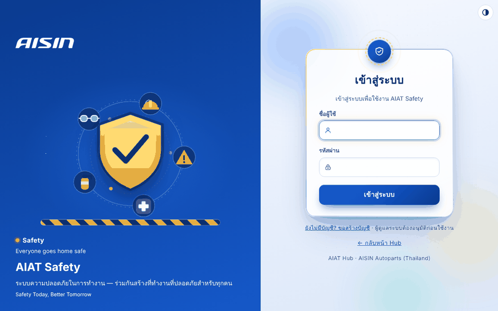
ภาพที่ 2 หน้าเข้าสู่ระบบ Safety ลิงก์ «กลับหน้า Hub» อยู่ใต้ฟอร์ม หลังล็อกอินแล้ว กลับมาที่หน้า Hub จะเห็นชื่อของคุณที่มุมขวาบนและตัวเลขรายการที่ต้องติดตามบนไทล์ Safety
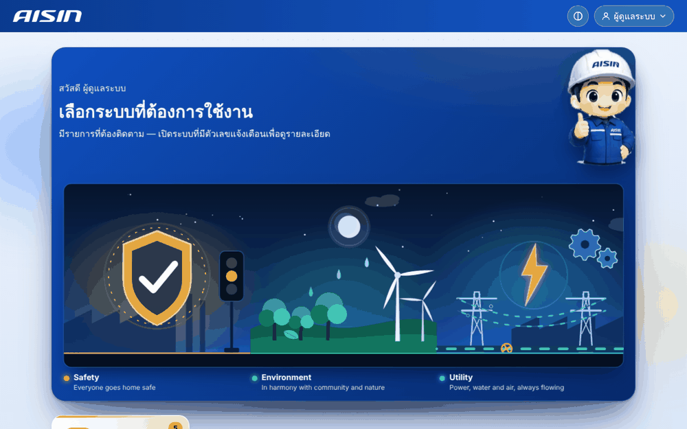
ภาพที่ 3 หน้า Hub หลังล็อกอิน ไทล์ที่เห็นขึ้นกับสิทธิ์ของคุณ เข้าครั้งแรกจะเป็นบทบาท «ผู้แจ้ง» ทุกคนที่เข้า Safety เป็นครั้งแรกจะได้บทบาทผู้แจ้งอัตโนมัติ ซึ่งแจ้งอันตรายและอุบัติเหตุได้ ถ้าหน้าที่ของคุณต้องประเมินความเสี่ยง ตรวจ Safety Patrol หรือดูรายงาน ให้บอกผู้ดูแลระบบให้เปลี่ยนบทบาท หลังเปลี่ยนแล้วรีเฟรชหน้า เมนูจะเพิ่มให้ทันที ไม่ต้องล็อกอินใหม่
ยังไม่มีบัญชี
กดลิงก์ «ยังไม่มีบัญชี? ขอสร้างบัญชี» ใต้ฟอร์มเข้าสู่ระบบ กรอกชื่อผู้ใช้ (ตัวอักษรอังกฤษ ตัวเลข จุด ขีดล่าง หรือขีดกลาง ยาว 3–32 ตัว) ชื่อ-นามสกุล แล้วเลือกโรงงานและแผนกที่คุณสังกัด (เลือกโรงงานก่อน รายการแผนกและไลน์จะตามมา ไลน์ระบุหรือไม่ก็ได้) ตั้งรหัสผ่านอย่างน้อย 8 ตัวอักษร (กรอกสองครั้ง) แล้วกด «ส่งคำขอ» ผู้ดูแลระบบใช้ข้อมูลสังกัดนี้ตัดสินใจอนุมัติและกำหนดสิทธิ์ให้ถูก จึงควรเลือกให้ตรงกับหน้าที่จริง บัญชีที่ขอไว้ ยังเข้าระบบไม่ได้ จนกว่าผู้ดูแลระบบจะอนุมัติ ถ้าลองเข้าก่อนจะเห็นข้อความว่ารออนุมัติ เมื่ออนุมัติแล้วใช้ชื่อผู้ใช้และรหัสผ่านที่ตั้งไว้ได้ทันที ถ้าเร่งใช้ ให้แจ้งผู้ดูแลระบบให้เปิดหน้าอนุมัติ ถ้าไม่เห็นลิงก์ขอสร้างบัญชีบนหน้าเข้าสู่ระบบ แปลว่าบริษัทปิดการขอบัญชีด้วยตนเอง ให้ติดต่อผู้ดูแลระบบเพื่อให้สร้างบัญชีให้
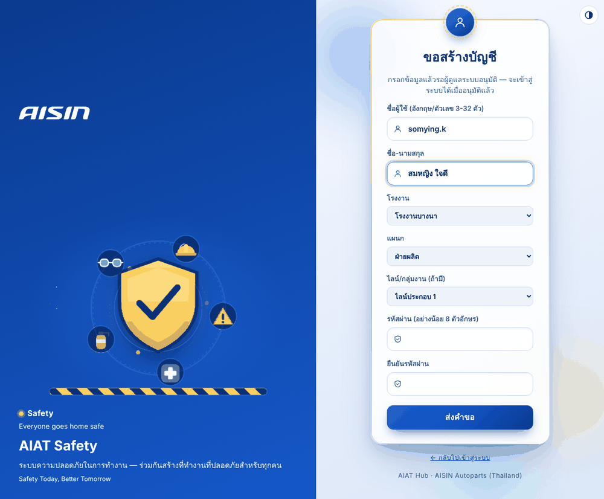
ภาพที่ 3ก หน้าขอสร้างบัญชี ออกจากระบบ
กดชื่อของคุณที่มุมขวาบน แล้วเลือกออกจากระบบ จะเห็นหน้า «กำลังออกจากระบบ…» ครู่เดียว แล้วกลับหน้า Hub เอง (ไม่ต้องใส่รหัสผ่านเพื่อดูหน้านี้) ถ้าใช้เครื่องที่คนอื่นใช้ร่วมด้วยควรออกทุกครั้ง การออกจากระบบจาก Safety จะออกจาก Hub ให้ด้วย และการออกจาก Hub ก็ออกจาก Safety ให้ด้วย ต่อให้ Safety ปิดอยู่ก็กลับหน้า Hub ได้ ไม่ค้างหน้าผิดพลาด
ลืมรหัสผ่าน
ระบบไม่มีปุ่ม «ลืมรหัสผ่าน» ให้กดเอง ผู้ดูแลระบบเป็นคนตั้งรหัสใหม่ให้ที่หน้าจัดการผู้ใช้ของ Hub รหัสผ่านต้องยาวอย่างน้อย 8 ตัวอักษร
รู้จักหน้าจอ
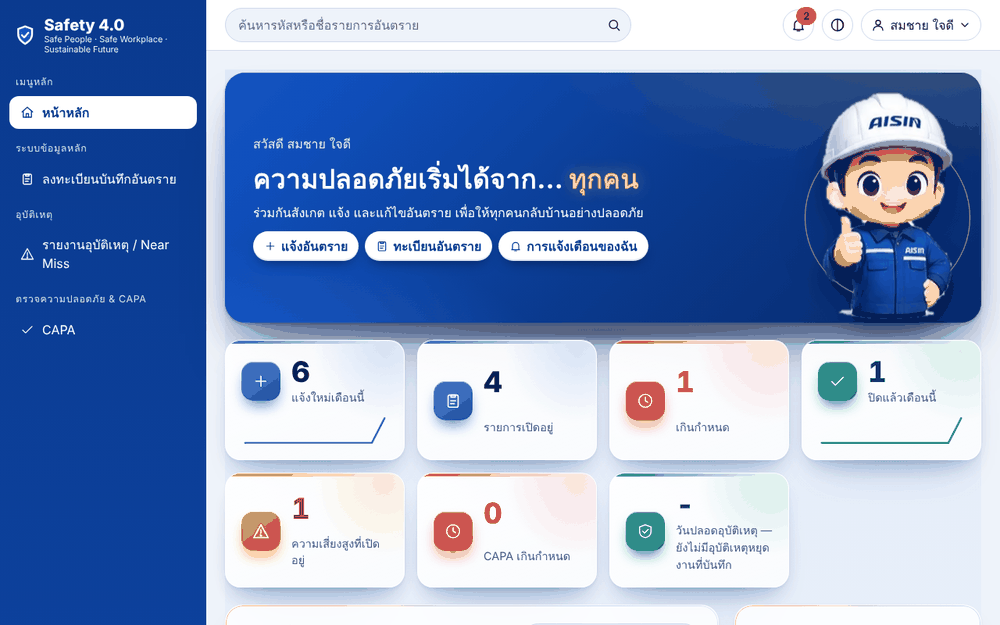
ภาพที่ 3 หน้าหลักของผู้แจ้ง
ส่วน ใช้ทำอะไร เมนูซ้ายมือ ไปยังส่วนต่าง ๆ ของระบบ รายการที่ไฮไลต์คือหน้าที่คุณอยู่ บนมือถือเมนูซ่อนอยู่ กดปุ่ม «เมนู» มุมบนซ้าย ช่องค้นหา (แถบบน) พิมพ์รหัสหรือชื่อรายการอันตรายเพื่อค้นหา ดูบทที่ 8 กระดิ่ง ตัวเลขสีแดงคือจำนวนแจ้งเตือนที่ยังไม่ได้อ่าน กดเพื่อดูรายการและกดเข้าไปยังเรื่องนั้นได้เลย ปุ่มครึ่งวงกลม สลับธีมสว่าง/มืด ระบบจำค่าที่คุณเลือกไว้ในเบราว์เซอร์นั้น ชื่อของคุณ เมนูโปรไฟล์และออกจากระบบ การ์ดตัวเลข สรุปสถานการณ์ เช่น รายการเปิดอยู่ และรายการที่เกินกำหนด ตัวเลขของผู้แจ้งนับเฉพาะเรื่องที่เกี่ยวกับตัวเอง การ์ดที่มีลิงก์กดแล้วไปดูรายการที่เป็นตัวเลขนั้นพอดี ปุ่มลัดบนแบนเนอร์ «แจ้งอันตราย» ไปที่ฟอร์มแจ้งทันที
บทที่ 3 แจ้งอันตรายก่อนกดแจ้ง เตรียมสามอย่าง
รู้ว่าอยู่ตรงไหน ระบบให้เลือกพื้นที่เสี่ยงจากรายการที่ผู้ดูแลตั้งไว้ เช่น «จุดป้อนวัตถุดิบ» ของไลน์ประกอบ 1 ถ้ายืนอยู่หน้าจุดนั้นแล้วไม่แน่ใจว่าเป็นพื้นที่ไหน ดูป้ายพื้นที่ในโรงงาน หรือถามหัวหน้างานก่อนแจ้งจะเร็วกว่าเดาแล้วให้คนอื่นต้องตามแก้ทีหลังรูปอย่างน้อยหนึ่งรูป รูปทำให้ผู้ประเมินตัดสินใจได้โดยไม่ต้องเดินมาดูเอง ถ่ายให้เห็นทั้งตัวปัญหาและสิ่งรอบข้างที่บอกตำแหน่งเขียนเหตุ ไม่ใช่เขียนความรู้สึก ดูตัวอย่างข้างล่าง
กรอกฟอร์ม
เมนู ลงทะเบียนบันทึกอันตราย แล้วกด + แจ้งอันตราย หรือกดปุ่ม «แจ้งอันตราย» จากหน้าหลัก
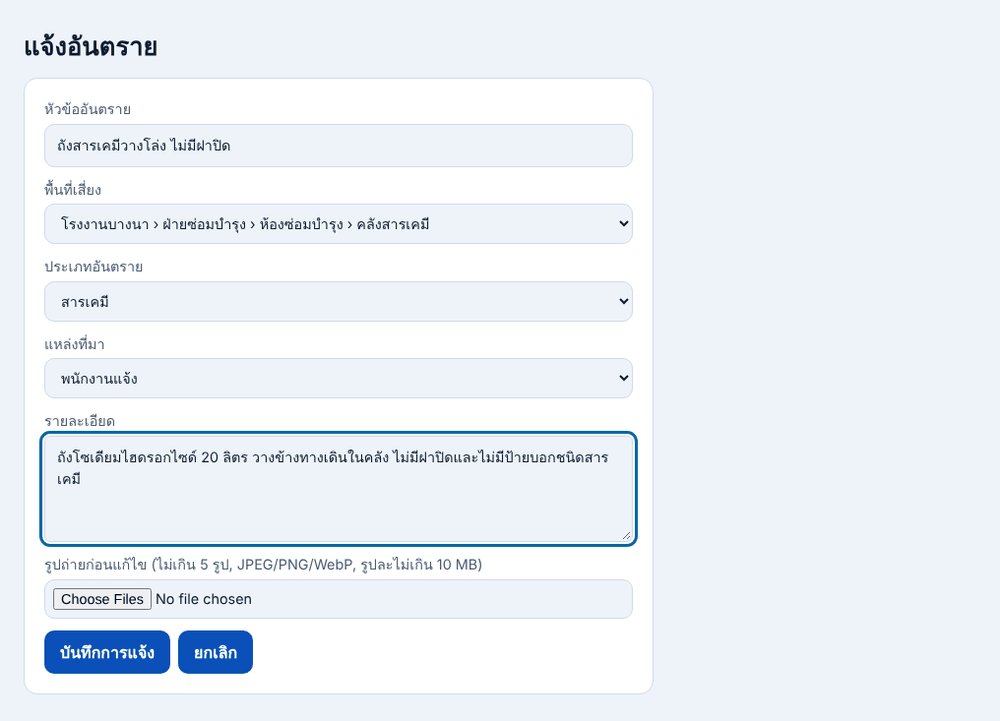
ภาพที่ 4 ฟอร์มแจ้งอันตรายที่กรอกแล้ว ก่อนกดบันทึกการแจ้ง
ช่อง กรอกอย่างไร บังคับ หัวข้ออันตราย ประโยคเดียวที่บอกว่าอะไรผิดปกติ ที่ไหน ยาวได้ไม่เกิน 200 ตัวอักษร ใช่ พื้นที่เสี่ยง เลือกจากรายการ แสดงเป็นสายโรงงาน › ฝ่าย › ไลน์ › พื้นที่ เห็นเฉพาะพื้นที่ที่อยู่ในขอบเขตงานของคุณ ใช่ ประเภทอันตราย เช่น สารเคมี เครื่องจักร ไฟฟ้า พื้นลื่น/ตกจากที่สูง อัคคีภัย เลือกที่ใกล้เคียงที่สุด ถ้าไม่ตรงเป๊ะให้บอกเพิ่มในช่องรายละเอียด ใช่ แหล่งที่มา คุณรู้เรื่องนี้ได้อย่างไร เช่น พนักงานแจ้ง การเดินตรวจ การตรวจประเมิน ถ้าคุณเห็นเองให้เลือก «พนักงานแจ้ง» ใช่ รายละเอียด เห็นอะไร ขนาดเท่าไหร่ เสี่ยงกับใคร บ่อยแค่ไหน ไม่เกิน 2,000 ตัวอักษร ไม่ ช่องเพิ่มเติม บางประเภทอันตรายมีช่องเพิ่ม เช่น ชื่อสารเคมี ผู้ดูแลระบบเป็นผู้ตั้ง ช่องที่มีเครื่องหมาย * ต้องกรอก ตามที่ระบุ รูปถ่ายก่อนแก้ไข แนบได้สูงสุด 5 รูป ชนิด JPEG, PNG หรือ WebP รูปละไม่เกิน 10 MB รวมทุกรูปในครั้งเดียวไม่เกิน 25 MB ระบบย่อรูปให้อัตโนมัติ ไม่ (แต่ควรแนบ)
เมื่อกด บันทึกการแจ้ง ระบบสร้างรหัสให้ทันที รูปแบบ HZ-ปีเดือน-ลำดับ เช่น HZ-2610-0002 คือรายการที่สองของเดือนตุลาคม 2026 ลำดับเริ่มนับใหม่ทุกเดือน จดรหัสนี้ไว้ถ้าต้องการถามความคืบหน้ากับใคร จป. จะเห็นรายการของคุณและได้รับแจ้งเตือนในทันที
หัวข้อที่เขียนดีและไม่ดี
แทนที่จะเขียน เขียนว่า เพราะ อันตรายมาก น้ำมันรั่วบนพื้นหน้าเครื่องปั๊ม 150 ตัน บอกว่าอะไรและที่ไหน ผู้ประเมินให้คะแนนเองได้ ไม่ปลอดภัย โปรดแก้ไข ถังสารเคมีไม่มีฝาปิด ในคลังสารเคมี ค้นหาเจอทีหลัง และแยกออกจากรายการอื่นได้ ไฟช็อต สายไฟต่อพ่วงสว่านมือ ฉนวนปริ เห็นทองแดง บอกสภาพจริง ไม่ใช่เหตุการณ์ที่ยังไม่เกิด
ตัวอย่างรายละเอียดที่ใช้งานได้จริง «พบน้ำมันไฮดรอลิกรั่วเป็นแอ่งกว้างประมาณ 1 ตารางเมตร พื้นลื่นมาก พนักงานเดินผ่านทุกกะ ยังไม่มีใครล้ม» สามประโยคนี้บอกขนาด ความเสี่ยง และจำนวนคนที่โดนผลกระทบ ซึ่งเป็นสามอย่างที่ผู้ประเมินต้องใช้ให้คะแนน
ถ่ายรูปจากมือถือ
กดช่องแนบรูปแล้วเลือกได้ทั้ง «ถ่ายรูป» และ «เลือกจากคลังภาพ» ขึ้นกับรุ่นมือถือ ถ้าถ่ายไว้ก่อนแล้วจะแนบภายหลังก็ได้ ดูหัวข้อ «เพิ่มรูปทีหลัง» ในบทที่ 4
ถ้ารูปมีปัญหา ฟอร์มจะไม่ถูกบันทึก ระบบตรวจรูปก่อนบันทึกอะไรทั้งสิ้น ถ้ามีรูปที่เกิน 10 MB ไม่ใช่รูปภาพ หรือเกิน 5 รูป ฟอร์มจะกลับมาพร้อมข้อความบอกสาเหตุ ข้อความที่พิมพ์ไว้ยังอยู่ แต่ต้องเลือกรูปใหม่ เพราะเบราว์เซอร์ไม่ยอมให้เว็บจำไฟล์ที่เลือกไว้
บทที่ 4 ติดตามรายการ และความหมายของสถานะหน้ารายการ
เมนู ลงทะเบียนบันทึกอันตราย แสดงรายการที่คุณแจ้ง และรายการที่ได้รับมอบหมายให้คุณ ใหม่สุดอยู่บนสุด กดที่หัวคอลัมน์เพื่อเรียง กดรหัสเพื่อเปิดรายละเอียด
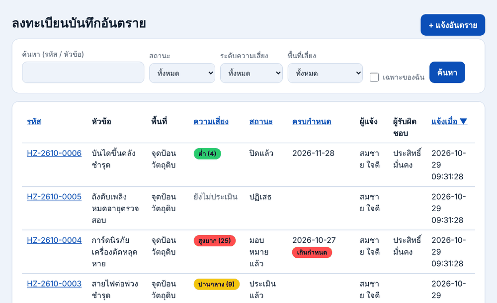
ภาพที่ 5 หน้ารายการ สีของป้ายระดับความเสี่ยงมาจากเกณฑ์ที่บริษัทกำหนด ตัวกรองด้านบนเลือกได้ตามสถานะ ระดับความเสี่ยง และพื้นที่ ช่องค้นหารับรหัสหรือบางส่วนของหัวข้อ ถ้าเลือกตัวกรองแล้วไม่พบรายการ ให้ลองกดล้างตัวกรองก่อน
สถานะทั้งห้า
สถานะ หมายถึง คนที่ถือเรื่องอยู่ แจ้งแล้ว ระบบรับเรื่องแล้ว รอผู้ประเมินให้คะแนนความเสี่ยง จป. / ผู้ประเมิน ประเมินแล้ว ได้คะแนนและระดับความเสี่ยงแล้ว รอมอบหมายผู้รับผิดชอบ ผู้ประเมิน / หัวหน้าหน่วยงาน มอบหมายแล้ว มีผู้รับผิดชอบและวันครบกำหนดแล้ว กำลังแก้ไข ผู้รับผิดชอบ ปิดแล้ว แก้ไขเสร็จและมีผู้ตรวจรับ เก็บเป็นประวัติ ไม่แก้ไขต่อ — ปฏิเสธ ผู้ประเมินเห็นว่ารายการนี้ไม่ต้องดำเนินการ พร้อมเหตุผลที่คุณอ่านได้ —
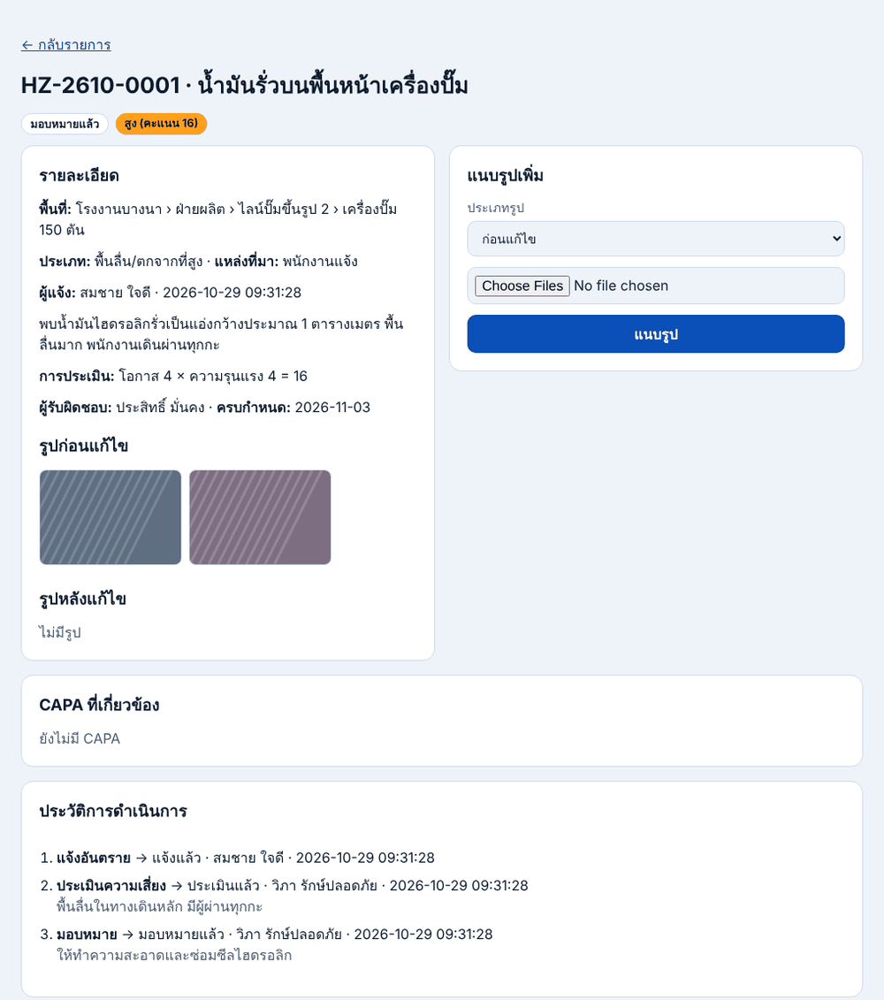
ภาพที่ 6 รายการที่อยู่ในสถานะ «มอบหมายแล้ว» ผู้แจ้งเห็นคะแนน ผู้รับผิดชอบ วันครบกำหนด และประวัติทุกขั้น ส่วน ประวัติการดำเนินการ ด้านล่างสุดของหน้า เป็นบันทึกว่าใครทำอะไร เมื่อไหร่ ระบบเพิ่มได้อย่างเดียว ไม่มีใครลบหรือแก้ไขย้อนหลังได้
รายการที่คุณเห็นได้
ผู้แจ้งทั่วไปเห็นเฉพาะรายการที่ตัวเองแจ้งหรือที่ตัวเองเป็นผู้รับผิดชอบ รายการของเพื่อนร่วมงานจะไม่โผล่ในรายการหรือในการค้นหา และถ้ามีใครส่งลิงก์รายการที่คุณไม่เกี่ยวข้องมาให้ ระบบแจ้งว่าไม่พบ ไม่ใช่ข้อบกพร่อง นี่เป็นการป้องกันข้อมูลโดยตั้งใจ
เมื่อรายการถูกปฏิเสธ
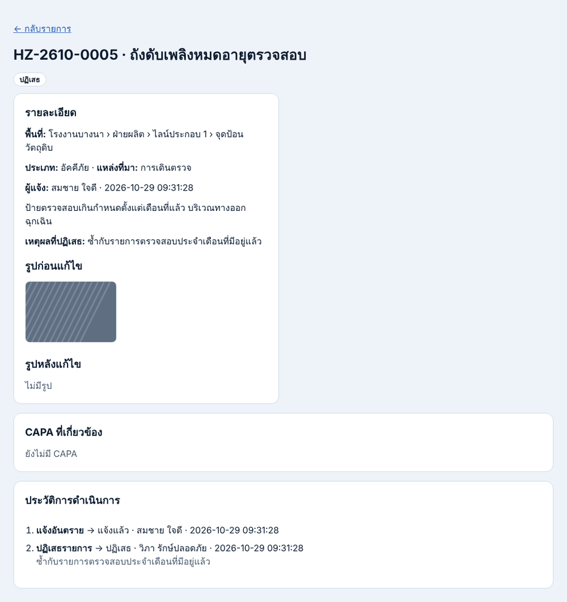
ภาพที่ 7 รายการที่ถูกปฏิเสธ เหตุผลอยู่ในประวัติการดำเนินการ ถูกปฏิเสธไม่ได้แปลว่าคุณแจ้งผิด เหตุผลที่พบบ่อยคือซ้ำกับรายการที่มีอยู่แล้ว หรือเป็นเรื่องที่มีแผนแก้ไขตามรอบอยู่แล้ว อ่านเหตุผล ถ้าเห็นต่างให้คุยกับผู้ประเมินโดยตรง ระบบไม่มีปุ่มอุทธรณ์ ถ้าสภาพอันตรายยังอยู่จริงและเหตุผลไม่ครอบคลุม แจ้งเป็นรายการใหม่พร้อมรูปปัจจุบันได้
เพิ่มรูปทีหลัง
ตราบที่รายการยังไม่ปิด คุณเพิ่มรูปได้จากกล่อง แนบรูปเพิ่ม ในหน้ารายละเอียด เลือกประเภทรูป «ก่อนแก้ไข» แล้วกด แนบรูป ใช้เมื่อมีหลักฐานเพิ่มหรือสภาพเปลี่ยนไป (แอ่งน้ำมันขยายกว้างขึ้น เป็นต้น) รูป «หลังแก้ไข» แนบโดยผู้ที่ปิดรายการตอนปิดงาน
แก้ไขหัวข้อที่แจ้งไปแล้วไม่ได้ เมื่อบันทึกแล้ว หัวข้อและรายละเอียดเปลี่ยนไม่ได้ เพื่อให้ประวัติเชื่อถือได้ ถ้าพิมพ์ผิดหรือข้อมูลสำคัญตกหล่น ให้แนบรูปเพิ่มและแจ้งผู้ประเมินให้ใส่ข้อมูลที่ถูกต้องในหมายเหตุตอนประเมิน
บทที่ 5 แจ้งอุบัติเหตุ และ Near Missใช้เมนู รายงานอุบัติเหตุ / Near Miss เมื่อเหตุเกิดขึ้นแล้ว ไม่ว่าจะมีคนเจ็บหรือเกือบเจ็บ ถ้ามีผู้บาดเจ็บ ให้ดูแลช่วยเหลือและพาไปห้องพยาบาลก่อน แล้วจึงบันทึก ระบบไม่ใช่ช่องทางเรียกความช่วยเหลือฉุกเฉิน ให้แจ้งหัวหน้างานและห้องพยาบาลโดยตรงตามระเบียบของบริษัทด้วยเสมอ
อุบัติเหตุ Near Miss ลักษณะ มีผู้บาดเจ็บ หรือทรัพย์สินเสียหาย เกือบเกิด ไม่มีใครบาดเจ็บ ไม่มีของเสียหาย ตัวอย่าง นิ้วถูกหนีบขณะเปลี่ยนแม่พิมพ์ ชิ้นงานหล่นห่างจากเท้า 20 ซม. ต้องระบุเพิ่ม ระดับความรุนแรงของการบาดเจ็บ โอกาสที่จะเกิด และความรุนแรงที่อาจเกิด
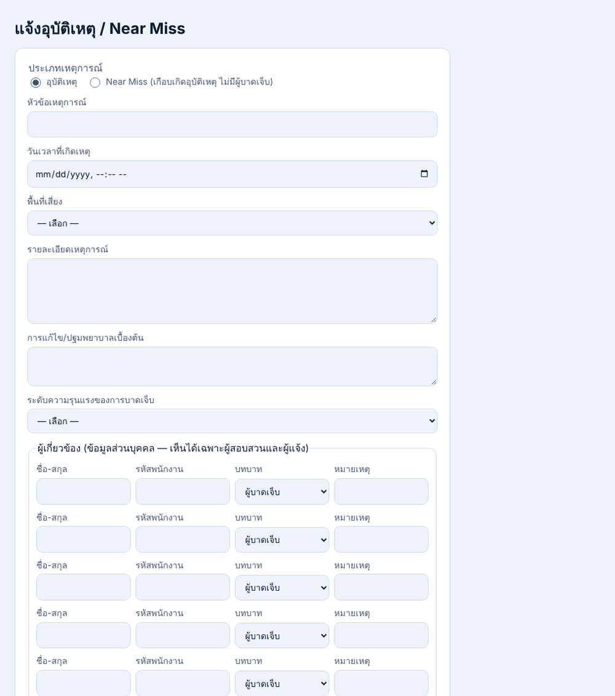
ภาพที่ 8 ฟอร์มแจ้งอุบัติเหตุ / Near Miss
เลือกประเภทเหตุการณ์ อุบัติเหตุหรือ Near Miss ช่องที่ต้องกรอกต่อจากนี้เปลี่ยนตามประเภทที่เลือก
ใส่หัวข้อ และวันเวลาที่เกิดเหตุ ต้องเป็นเวลาที่เกิดขึ้นจริงแล้ว ระบบไม่รับเวลาในอนาคต ถ้าจำเวลาไม่ได้ ใส่เวลาที่ใกล้เคียงที่สุดแล้วบอกในรายละเอียด
เลือกพื้นที่เสี่ยง แล้วเขียนรายละเอียดเหตุการณ์ว่าเกิดอะไร ลำดับเป็นอย่างไร
เขียน การแก้ไข/ปฐมพยาบาลเบื้องต้น ว่าทำอะไรไปแล้วตอนนั้น
ถ้าเป็นอุบัติเหตุ เลือกระดับความรุนแรงของการบาดเจ็บ เลือกตามที่เห็นตอนนี้ ผู้สอบสวนปรับระดับได้ภายหลังถ้าข้อมูลเปลี่ยน ถ้าเป็น Near Miss เลือกโอกาสที่จะเกิดซ้ำกับความรุนแรงที่อาจเกิดขึ้นหากเหตุนั้นไม่รอด
เพิ่มรายชื่อผู้เกี่ยวข้อง (ผู้บาดเจ็บ พยาน) ได้ แล้วแนบรูปที่เกิดเหตุไม่เกิน 5 รูป
กด บันทึกการแจ้ง ได้รหัสแบบ IN-ปีเดือน-ลำดับ
ข้อมูลบุคคลเห็นได้เฉพาะสองกลุ่ม ชื่อ รหัสพนักงาน และบทบาทของผู้เกี่ยวข้อง เป็นข้อมูลส่วนบุคคล ระบบแสดงให้เฉพาะผู้ที่มีสิทธิ์สอบสวนหรือปิดรายการอุบัติเหตุ กับตัวคุณในฐานะผู้แจ้ง ผู้ใช้อื่นเห็นรายการโดยไม่มีชื่อ ในรายงานและสถิติก็ไม่มีชื่อบุคคลเด็ดขาด ใส่ข้อมูลเท่าที่จำเป็นต่อการสอบสวน
หลังแจ้งแล้วเกิดอะไรขึ้น
แจ้ง คุณบันทึกเหตุการณ์
สอบสวน มีผู้สอบสวนรับผิดชอบ ค่าตั้งต้น 14 วัน
ตั้งมาตรการ หาสาเหตุราก กำหนดการแก้ไขป้องกัน
ปิด ผู้มีสิทธิ์ที่ไม่ใช่ผู้สอบสวนปิดรายการ
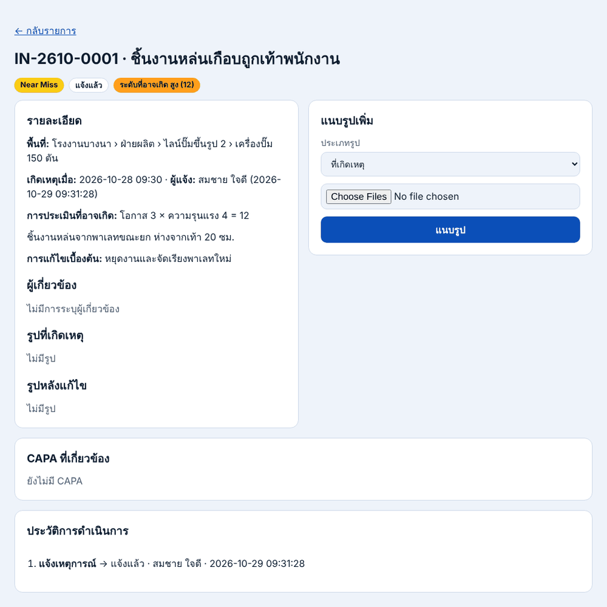
ภาพที่ 9 รายละเอียด Near Miss ที่รอผู้สอบสวน ผู้แจ้งดูสถานะและประวัติได้ คุณไม่ต้องทำอะไรต่อ ยกเว้นเมื่อผู้สอบสวนติดต่อมาถามข้อมูลเพิ่ม ถ้ารายชื่อผู้เกี่ยวข้องที่กรอกไว้ผิดหรือตกหล่น ผู้แจ้งแก้เองหลังบันทึกไม่ได้ ให้บอกผู้สอบสวน เขาแก้ได้จากส่วน แก้ไขรายชื่อผู้เกี่ยวข้อง ในหน้ารายละเอียด
บทที่ 6 เมื่อคุณได้รับมอบหมายงานบางวันคุณจะได้แจ้งเตือนว่า «มอบหมายงานแก้ไข» หรือ «มอบหมาย CAPA» แปลว่ามีคนเลือกคุณเป็นผู้รับผิดชอบ งานนั้นมีวันครบกำหนด ระบบจะเตือนล่วงหน้า 2 วันและเตือนซ้ำเมื่อเลยกำหนด ตามกฎที่ผู้ดูแลระบบตั้งไว้
เป็นผู้รับผิดชอบรายการอันตราย
กดแจ้งเตือนในกระดิ่ง หรือเปิดรายการจากเมนู อ่านคะแนนความเสี่ยง วันครบกำหนด และหมายเหตุของผู้ที่มอบหมาย
แก้ไขสภาพอันตรายหน้างานจริง ถ่ายรูปหลัง แก้ไขเก็บไว้
แจ้งผู้มีสิทธิ์ปิดรายการให้มาตรวจรับ แล้วส่งรูปหลังแก้ไขให้เขา
ถ้าคุณเองมีสิทธิ์ปิดรายการ (และกฎของระดับความเสี่ยงอนุญาต) ให้กรอก ผลการแก้ไข แนบรูปหลังแก้ไขในกล่อง ปิดรายการ แล้วกดปิด
ใครปิดรายการได้ การปิดรายการและการแนบรูป «หลังแก้ไข» เป็นสิทธิ์ของผู้ปิดรายการ ผู้รับผิดชอบที่ไม่มีสิทธิ์ปิดต้องให้ผู้อื่นปิดและแนบรูปนั้น และถ้ารายการอยู่ในระดับความเสี่ยงสูงสุดที่ต้องอนุมัติ ผู้ที่เคยเป็นผู้รับผิดชอบรายการนั้น (แม้โอนงานออกไปแล้ว) ปิดเองไม่ได้ ระบบตั้งใจให้คนตรวจรับเป็นคนละคนกับคนแก้
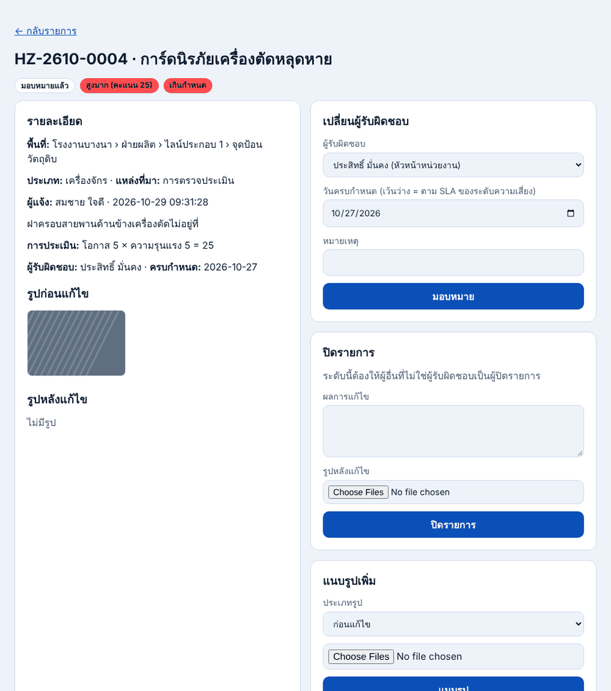
ภาพที่ 10 หน้ารายการที่ผู้มีสิทธิ์ปิดเห็น มีกล่อง «ปิดรายการ» พร้อมช่อง «ผลการแก้ไข» ผู้รับผิดชอบที่ไม่มีสิทธิ์ปิดจะไม่เห็นกล่องนี้ เป็นเจ้าของ CAPA
CAPA คือการกระทำแก้ไขหรือป้องกันที่ต้องทำตามจากรายการอันตรายหรืออุบัติเหตุ เมนู CAPA แสดงงานทั้งหมดของคุณ
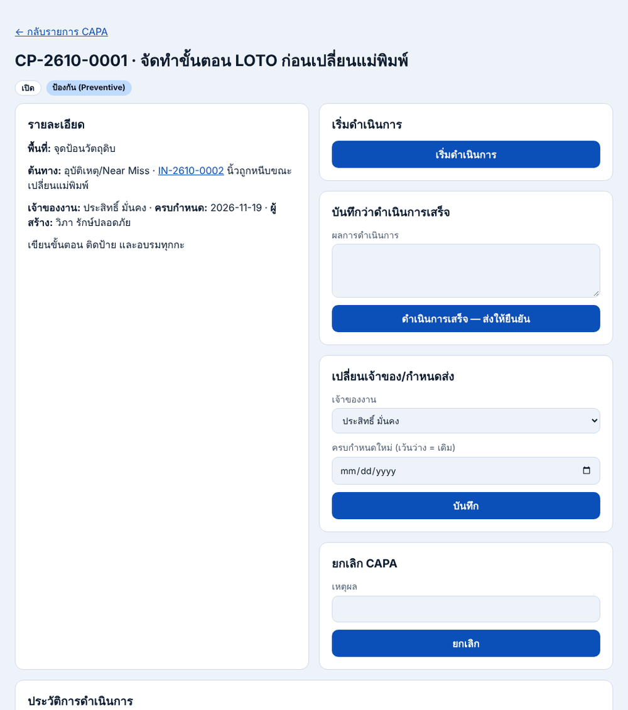
ภาพที่ 11 CAPA ที่เพิ่งได้รับมอบหมาย สถานะ «เปิด» รอเจ้าของงานกดเริ่ม
สถานะ คุณทำอะไร เปิด กด เริ่มดำเนินการ เฉพาะเจ้าของงานเท่านั้นที่กดได้ กำลังดำเนินการ ทำงานจริง เมื่อเสร็จกรอก ผลการดำเนินการ ว่าทำอะไรไปบ้าง แล้วกด ดำเนินการเสร็จ — ส่งให้ยืนยัน เสร็จ รอยืนยัน รอคนอื่นตรวจผล คุณยืนยันงานของตัวเองไม่ได้ ถ้าถูกตีกลับ งานกลับมาเป็น «กำลังดำเนินการ» พร้อมเหตุผล ยืนยันแล้ว จบงาน อาจมีการตรวจประสิทธิผลตามมา ยกเลิก ผู้สร้าง หรือผู้มีสิทธิ์สร้าง CAPA ยกเลิกพร้อมเหตุผล
ถ้าทำไม่ทันตามกำหนด อย่าปล่อยให้เกินไปเงียบ ๆ ขอให้ผู้ที่มีสิทธิ์สร้าง CAPA (มักเป็น จป. หรือหัวหน้าหน่วยงาน) ใช้ เปลี่ยนเจ้าของ/กำหนดส่ง เลื่อนกำหนดใหม่ พร้อมเหตุผลที่คุยกันไว้ ระบบบันทึกการเลื่อนในประวัติ
บทที่ 7 การแจ้งเตือนและโปรไฟล์กระดิ่งในระบบ
ใช้ได้ทันทีโดยไม่ต้องตั้งค่า กดกระดิ่งหรือเมนูการแจ้งเตือนเพื่อดูรายการทั้งหมด การกดที่รายการจะเปิดเรื่องนั้นและทำเครื่องหมายว่าอ่านแล้ว มีปุ่ม «อ่านทั้งหมด» สำหรับล้างเลขสีแดงรวดเดียว
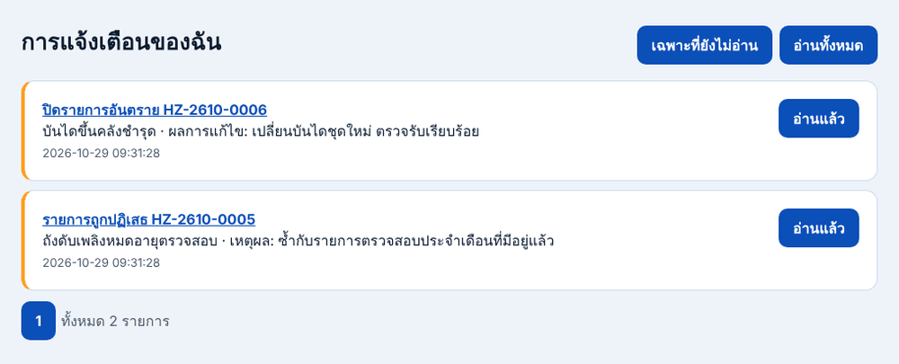
ภาพที่ 12 หน้าการแจ้งเตือน รับแจ้งเตือนนอกระบบ
ถ้าไม่อยากเปิดเว็บทุกวัน คุณเลือกให้ระบบส่งข้อความเข้า Telegram, LINE หรืออีเมลได้ ผู้ดูแลระบบต้องเปิดช่องทางนั้นให้ที่ฝั่งเซิร์ฟเวอร์ก่อน ถ้าทำตามขั้นตอนแล้วไม่มีข้อความมา ให้ถามผู้ดูแลว่าช่องทางนั้นเปิดอยู่หรือยัง
กดชื่อมุมขวาบน เลือก โปรไฟล์
กรอกข้อมูลติดต่อ Telegram ใส่เลข chat id ของคุณ LINE ใส่ user id ซึ่งขึ้นต้นด้วยตัว U ตามด้วย 32 ตัวอักษร อีเมลใส่ที่อยู่ปกติ
ติ๊ก «รับแจ้งเตือนทาง…» ของช่องทางที่ต้องการ
กด บันทึก
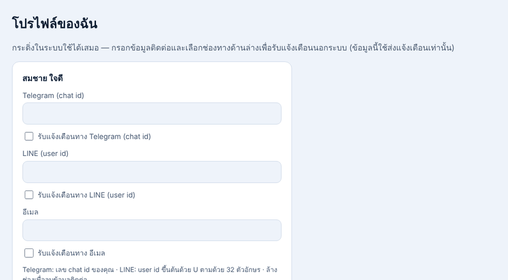
ภาพที่ 13 หน้าโปรไฟล์ ล้างช่องข้อมูลติดต่อแล้วบันทึกเพื่อลบข้อมูลของคุณออกจากระบบ ได้เรื่องอะไรบ้าง กฎเริ่มต้นส่งให้ผู้แจ้งเมื่อรายการของตัวเองถูกปิดหรือถูกปฏิเสธ ส่งให้ผู้รับผิดชอบเมื่อถูกมอบหมายและเมื่อใกล้ถึงกำหนด ใครได้อะไรผู้ดูแลระบบปรับได้ คุณจึงอาจได้รับไม่ตรงกับเพื่อนร่วมงาน
เวลาเงียบ
ข้อความนอกระบบที่ไม่เร่งด่วนจะถูกเก็บไว้ส่งหลังเวลาเงียบสิ้นสุด ค่าตั้งต้นคือ 22:00 ถึง 06:00 ส่วนกระดิ่งในระบบไม่ถูกหน่วง ข้อความเร่งด่วนส่งทันที
บทที่ 8 ค้นหา และการใช้บนมือถือค้นหา
ช่องค้นหาที่แถบบนค้นรายการอันตรายด้วยรหัสหรือชื่อหัวข้อ พิมพ์บางส่วนก็พบ เช่น «น้ำมัน» หรือ «0002» ผลลัพธ์ตามสิทธิ์ของคุณเสมอ
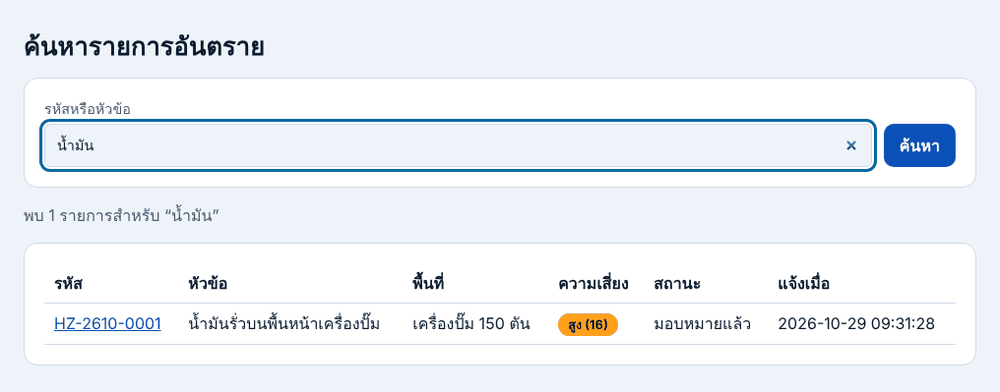
ภาพที่ 14 ผลค้นหาคำว่า «น้ำมัน» ใช้บนมือถือ
ระบบออกแบบให้ใช้บนจอมือถือได้เต็มรูปแบบ ไม่มีแอปให้ติดตั้ง เปิดผ่านเบราว์เซอร์ตามที่อยู่เดิม ถ้าใช้บ่อย ให้กดเพิ่มลงหน้าจอโฮมจากเมนูของเบราว์เซอร์ จะได้ปุ่มเปิดเร็วเหมือนแอป
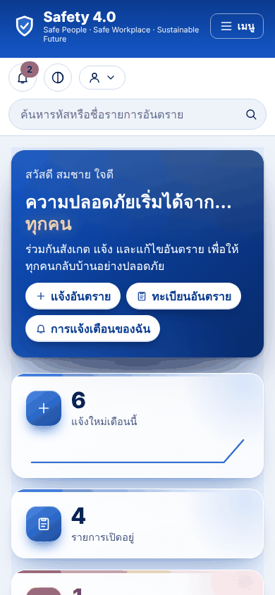
ภาพที่ 15 หน้าหลักบนมือถือ 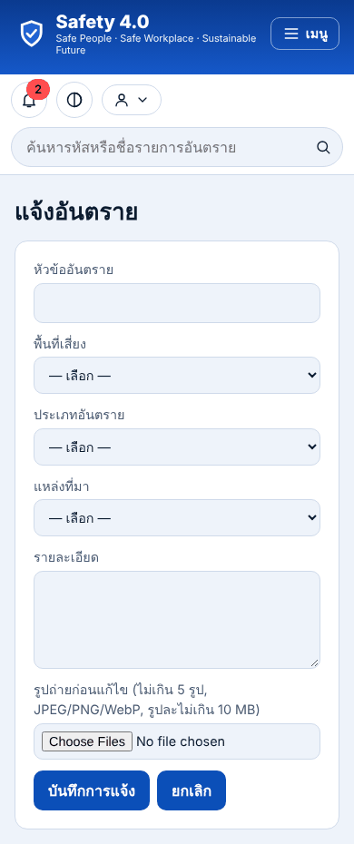
ภาพที่ 16 ฟอร์มแจ้งบนมือถือ
ถ่ายรูปจากช่องแนบรูปได้ทันที ไม่ต้องออกไปถ่ายก่อนแล้วกลับมา
ตารางยาวบนมือถือแสดงเป็นบัตรที่เรียงลงมา ทุกข้อมูลยังอยู่ครบ
เมนูซ้ายซ่อนอยู่หลังปุ่ม «เมนู» มุมบนซ้าย
ถ้าสัญญาณอ่อน ให้รอให้รูปอัปโหลดจนหน้าเปลี่ยน อย่ากดบันทึกซ้ำ ระบบสร้างรายการใหม่ทุกครั้งที่กด
บทที่ 9 เจอปัญหา ดูตรงนี้
เห็นอะไร สาเหตุ ทำอย่างไร «กรุณาเลือกพื้นที่เสี่ยงที่ใช้งานอยู่และอยู่ในขอบเขตของคุณ» ไม่ได้เลือกพื้นที่ หรือพื้นที่ที่เลือกถูกปิดใช้งานระหว่างที่คุณกรอก เลือกใหม่ ถ้าไม่เห็นพื้นที่ที่ต้องการในรายการ แปลว่าอยู่นอกขอบเขตของคุณหรือยังไม่ถูกเพิ่ม แจ้งผู้ดูแลระบบ «กรุณาเลือกประเภทอันตราย» / «กรุณาเลือกแหล่งที่มา» ยังไม่ได้เลือก เลือกจากรายการ ถ้าไม่มีตัวเลือกให้เลย แปลว่าผู้ดูแลยังไม่ได้ตั้งข้อมูล «ไฟล์ใหญ่เกิน 10 MB» รูปจากกล้องความละเอียดสูงบางรุ่นใหญ่เกินกำหนด ลดขนาดภาพจากการตั้งค่ากล้อง หรือส่งภาพที่ถ่ายผ่านแอปแชตที่บีบอัดมาแล้ว «ไฟล์ไม่ใช่รูปภาพที่รองรับ» ไฟล์เป็นชนิดอื่น เช่น HEIC จากบางรุ่น หรือ PDF ใช้ JPEG, PNG หรือ WebP บน iPhone ตั้งค่ากล้องเป็น «เข้ากันได้สูงสุด» แทน «ประสิทธิภาพสูง» «แนบรูปได้ไม่เกิน 5 รูป» เลือกเกิน 5 รูปต่อครั้ง หรือของเดิมครบ 5 แล้ว เลือกรูปที่สำคัญที่สุด ถ้าต้องการภาพรวมหลายมุม ถ่ายรวมมุมเดียวให้เห็นภาพกว้าง «ส่งข้อมูลไม่สำเร็จ ขนาดข้อมูลเกิน 25 MB» รูปทุกรูปรวมกันใหญ่เกินไป กดกลับไปแก้ไข ลดจำนวนรูป ข้อความที่พิมพ์ไว้ยังอยู่ «วันเวลาที่เกิดเหตุต้องไม่อยู่ในอนาคต» ใส่เวลาหลังเวลาปัจจุบัน หรือนาฬิกาเครื่องคุณคลาดเคลื่อน ตรวจวันที่และเวลา ถ้านาฬิกาเครื่องเพี้ยนให้ตั้งใหม่ หน้า «ไม่พบ» หรือ «ไม่มีสิทธิ์» เปิดลิงก์ของรายการที่คุณไม่เกี่ยวข้อง หรือเมนูที่บทบาทคุณไม่มี ถ้าคิดว่าควรเข้าได้ ส่งรหัสรายการและหน้าที่ของคุณให้ผู้ดูแลระบบ กลับมาที่หน้าเข้าสู่ระบบเอง เซสชันหมดอายุ หรือบัญชีถูกปิดใช้งาน เข้าใหม่ ถ้าเข้าไม่ได้เลย ติดต่อผู้ดูแลระบบ ไม่มีแจ้งเตือนนอกระบบ ยังไม่ได้ตั้งโปรไฟล์ ช่องทางยังไม่เปิดที่ฝั่งเซิร์ฟเวอร์ หรืออยู่ในเวลาเงียบ ตรวจโปรไฟล์ตามบทที่ 7 แล้วถามผู้ดูแลระบบ
ก่อนถามผู้ดูแลระบบ บอกอะไรไปด้วย
ชื่อของคุณ และหน้าที่ที่ทำอยู่
รหัสรายการ (เช่น HZ-2610-0002) ถ้าเกี่ยวกับรายการใดรายการหนึ่ง
ข้อความที่ขึ้น คัดลอกตามตัวอักษรหรือถ่ายภาพหน้าจอ
กำลังทำอะไรอยู่ตอนนั้น และใช้เครื่องหรือมือถือรุ่นอะไร
ข้อมูลแบบนี้ทำให้ผู้ดูแลระบบหาสาเหตุได้ในไม่กี่นาที ส่วนคำว่า «ใช้ไม่ได้» อย่างเดียวต้องเสียเวลาถามกลับ
ภาคผนวก: ระดับความเสี่ยงตั้งต้น
คะแนนความเสี่ยงคำนวณจาก โอกาสที่จะเกิด คูณ ความรุนแรง แต่ละด้านมี 5 ระดับ ผู้ประเมินเป็นคนให้คะแนน ไม่ใช่ผู้แจ้ง ตารางนี้เป็นค่าตั้งต้นของระบบ บริษัทอาจปรับเกณฑ์ ให้ถือตามที่แสดงในระบบเป็นหลัก
ระดับ คะแนน เป้าหมายแก้ไข ความหมายเชิงปฏิบัติ ต่ำ 1–4 30 วัน จัดการตามแผนปกติ ปานกลาง 5–9 14 วัน ต้องมีผู้รับผิดชอบและกำหนดเวลา สูง 10–16 7 วัน ให้ความสำคัญก่อน สูงมาก 17–25 3 วัน ผู้บริหารหน่วยงานได้รับแจ้งทันที ผู้ปิดรายการต้องเป็นคนที่ไม่เคยรับผิดชอบรายการนั้น
ถ้าคุณเห็นสภาพที่เสี่ยงสูงมากและอาจเกิดอันตรายถึงชีวิตทันที ให้หยุดงานตรงนั้นและแจ้งหัวหน้างานด้วยตัวเอง ก่อนที่จะมาบันทึกลงระบบ